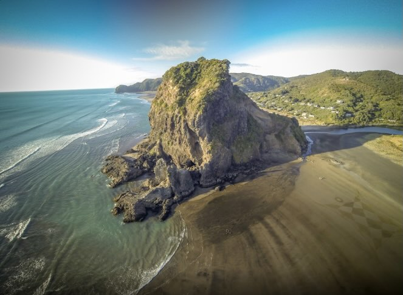
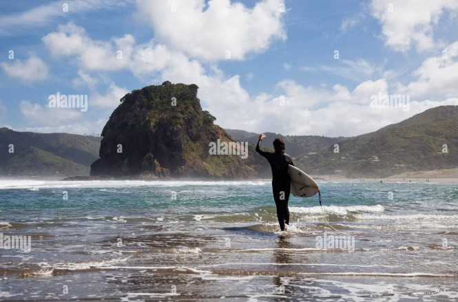

Piha is a small coastal settlement on Auckland's rugged west coast, about an hour's drive from the city. It sits beneath Lion Rock (Te Piha), a volcanic outcrop that splits the beach in two and holds deep significance for local iwi. The name "Piha" is believed to come from a phrase describing the sound of the ocean against the rocks.
The beach is known for its black iron sand, formed from volcanic material washed down from the Waitākere Ranges. This sand absorbs heat quickly and gives Piha its distinctive dark, dramatic look — very different from the white sand beaches on Auckland's east coast.

Lion Rock is a sacred site (wāhi tapu) to Māori and a natural landmark for everyone who visits Piha. It once formed part of a larger cliff before erosion separated it from the mainland — a reminder that coastal change has always shaped this place.

Piha is famous for its surf, its surf lifesaving history, and its strong sense of community. Locals and visitors alike feel a responsibility to look after it — this is kaitiakitanga in practice.
Kaitiakitanga reminds us that protecting nature today means protecting it for future generations.